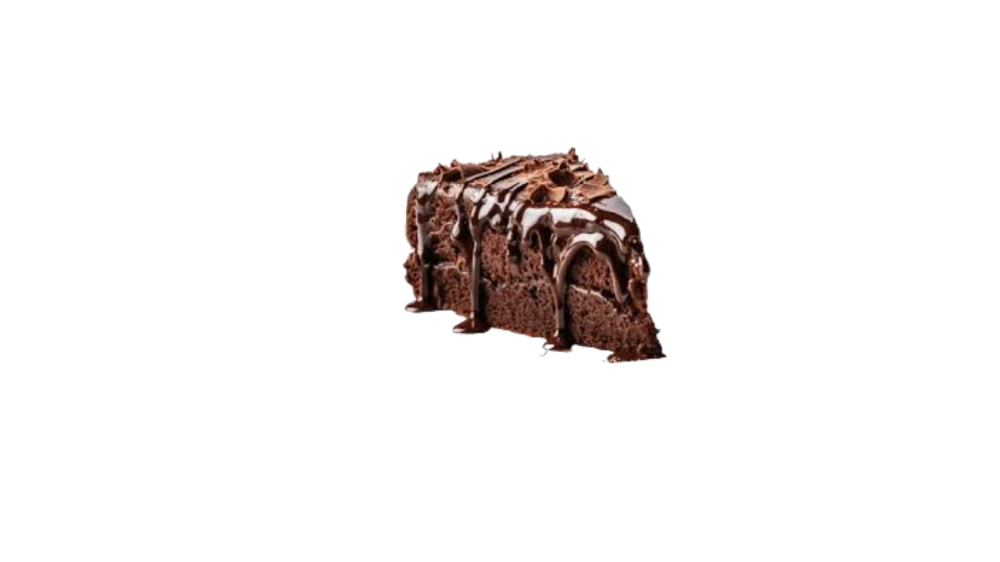

O bolo é uma das sobremesas mais populares do mundo. Ele está presente em aniversários, casamentos, festas e também no café da tarde. Existem diversos sabores, recheios e coberturas, tornando o bolo uma receita muito versátil e querida por pessoas de todas as idades.
Os primeiros bolos surgiram há muitos anos, e com o tempo as receitas foram sendo aprimoradas, ficando mais macias, doces e variadas.
📌 Descrição
O bolo de chocolate é um dos sabores mais amados. Ele pode ser simples ou recheado, e normalmente leva cobertura de brigadeiro ou ganache.
🥣 Ingredientes
👩🍳 Modo de Preparo